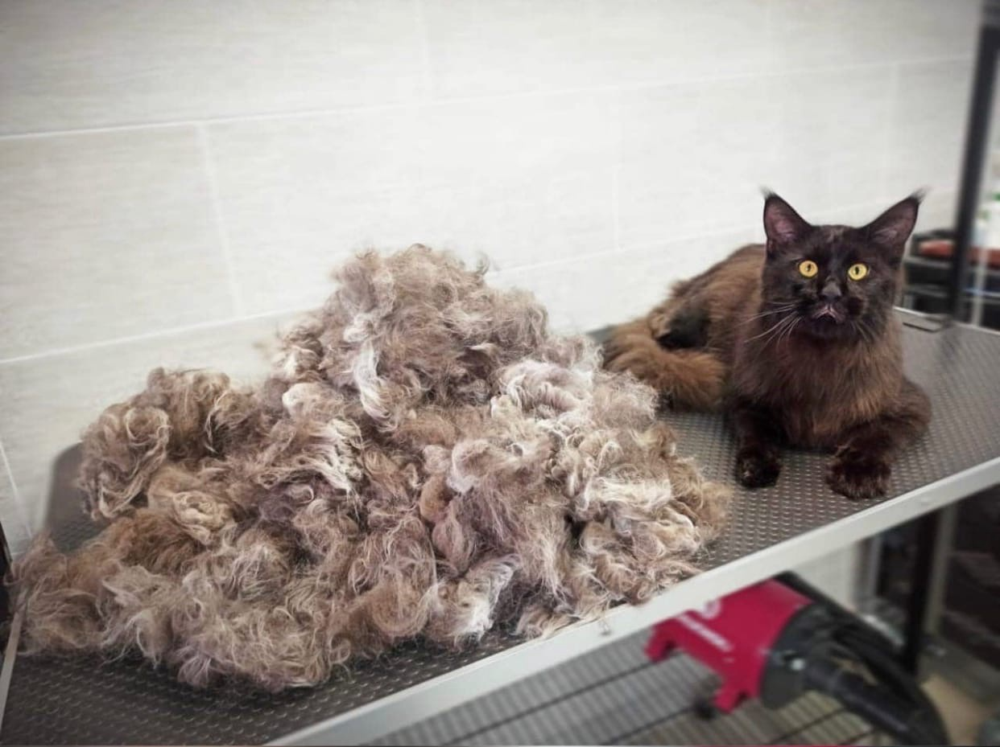
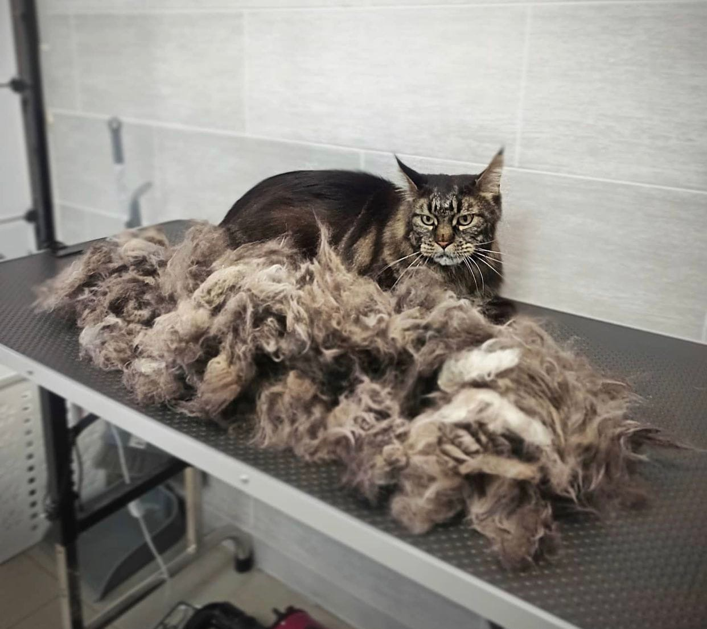

⇦На главную
Стрижка и вечес кошек
Кошки - животные особенные. Самолюбивые, самодостаточные, свободные, и независимые.
В работе с кошками очень важно учитывать особенности их психологии, знать и уметь читать язык их тела.
Кошку невозможно подчинить, с кошкой можно только договориться...
Мы предлагаем следующие виды услуг для кошек:
- Стрижка
Рекомендуется в случаях -беспрестанной линьки животного - обилия колтунов (сильно спутанной шерсти) на теле.
- Вычес
вычесывается лишняя ("мертвая") шерсть, а остается нелиняющий здоровый шерстный покров. Кошка при этом не теряет свой презентабельный вид.
- Выставочный груминг.
Мы проводим выставочную подготовку кошек всех пород. Суть выставочного груминга в умении качественно подготовить шерсть кошки, правильно подобрать косметику, грамотно ей воспользоваться и сделать укладку шерсти в соответствии с породой.

